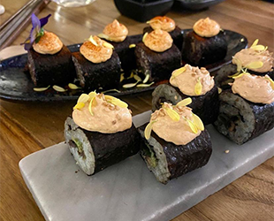

Herkomst en teelt
Hearth werkt met veel verschillende ingrediënten. Deze moeten natuurlijk ergens vandaan komen. Hearth let ook op de afstand die de ingrediënten moeten afleggen voordat ze verwerkt kunnen worden. Daarom worden er zo veel mogelijk streekproducten ingekocht, om ook hier het millieu mee te besparen.

Wat houdt het menu in?
Het menu van Hearth is compleet vrij van dierlijke producten. De chefs creeëren prachtige gerechten voor hun gasten en doen dit op een creatieve manier. Waar een normale chef werkt met een dierlijk product, werken zij met een duurzaam, eerlijk alternatief.
Eigen ervaring
Veel mensen denken dat het onmogelijk is om met plant-based ingrediënten lekker te kunnen eten. Dit kan zijn omdat zij ongeïnformeerd zijn of de smaak van vlees te lekker vinden om het te kunnen laten liggen. Zelf heb ik geen moeite met deze dingen en ben ik iedere dag weer blij om mijn eigen steentje bij te mogen dragen. Ik ben dan ook niet meer van plan om ooit weer terug te gaan naar het eten van vlees.
Klik hier om Hearth's menukaart in te zien